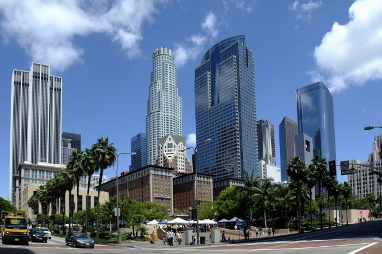

Лос-Анджелес, второй по населению город в США, имеет сложную и обширную инфраструктуру, поддерживающую его огромное население, экономику и рост. Вот обзор инфраструктуры города:
Транспортная инфраструктура:
Дорожная сеть: Лос-Анджелес имеет обширную сеть шоссе, автомагистралей и дорог, с более чем 7 500 милями асфальтированных дорог. Город обслуживается несколькими основными шоссе, включая Interstate 5, Interstate 10 и U.S. Route 101.
Общественный транспорт: Управление общественным транспортом округа Лос-Анджелес (LA Metro) эксплуатирует обширную систему общественного транспорта, включая автобусы, легкорельсовый транспорт и метро. Система имеет более 200 автобусных линий и шесть железнодорожных линий, с общим количеством 106 станций.
Аэропорты: Международный аэропорт Лос-Анджелеса (LAX) является одним из самых загруженных аэропортов в мире, обслуживая более 88 миллионов пассажиров ежегодно. Город также имеет несколько меньших аэропортов, включая аэропорт Лонг-Бич и аэропорт Боба Хоупа.
Инфраструктура энергоснабжения и водоснабжения:
Электричество: Департамент водоснабжения и энергетики Лос-Анджелеса (LADWP) является крупнейшим муниципальным предприятием в США, поставляющим электричество более чем 1,5 миллиону клиентов.
Водоснабжение: LADWP также обеспечивает водоснабжение города, с системой, которая включает в себя три водоочистные станции, 12 резервуаров и более 7 000 миль труб.
Инфраструктура Связи:
Телекоммуникации: Лос-Анджелес имеет хорошо развитую инфраструктуру телекоммуникаций, с несколькими провайдерами, предлагающими высокоскоростной интернет, телефон и телевизионные услуги.
Центры обработки данных: Город является домом для нескольких крупных центров обработки данных, включая те, которые эксплуатируются Google, Amazon и Microsoft.
Инфраструктура управления отходами:
Свалки: Лос-Анджелес имеет несколько свалок, включая свалку Пуэнте-Хиллс, которая является одной из крупнейших в стране.
Установки по переработке отходов: Город имеет несколько установок по переработке отходов, включая установку по переработке материалов LA Sanitation and Environment (LASAN).
Инфраструктура общественной безопасности:
Полицейское управление: Полицейское управление Лос-Анджелеса (LAPD) является одним из крупнейших полицейских управлений в стране, с более чем 10 000 офицеров.
Пожарное управление: Пожарное управление Лос-Анджелеса (LAFD) имеет более 3 400 пожарных и эксплуатирует 106 пожарных станций.
Инфраструктура образования:
Школы: Объединенный школьный округ Лос-Анджелеса (LAUSD) является вторым по величине школьным округом в стране, с более чем 1 300 школами и 694 096 студентами.
Университеты: Лос-Анджелес является домом для нескольких крупных университетов, включая Университет Калифорнии в Лос-Анджелесе (UCLA), Университет Южной Калифорнии (USC) и Калифорнийский государственный университет в Лос-Анджелесе (CSULA).
Изображение Города
